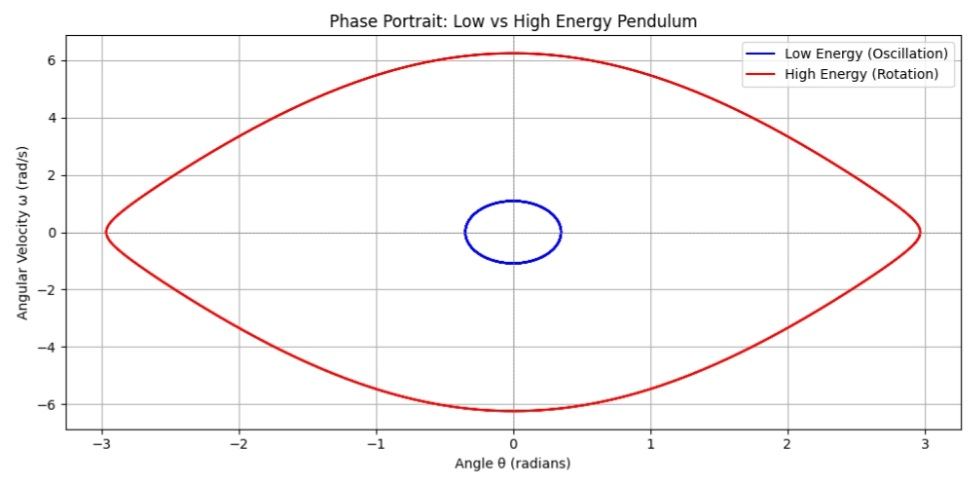
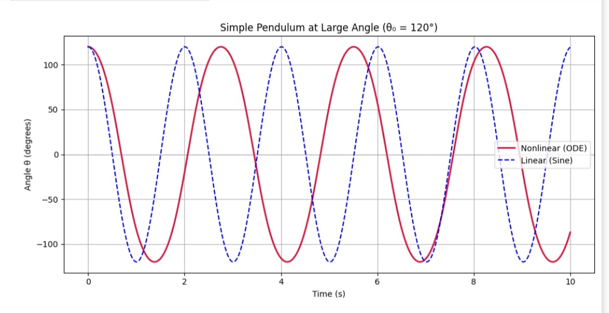
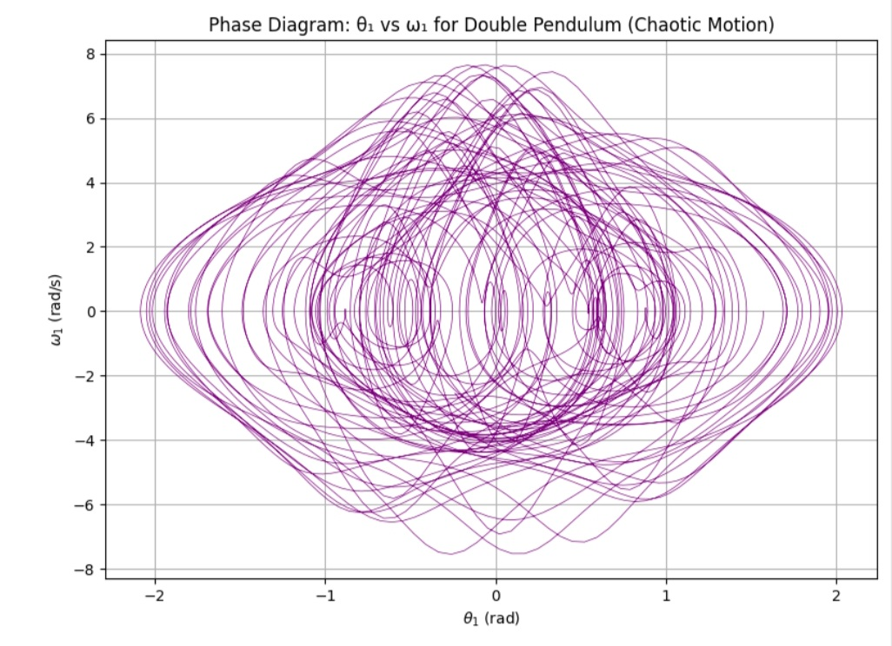
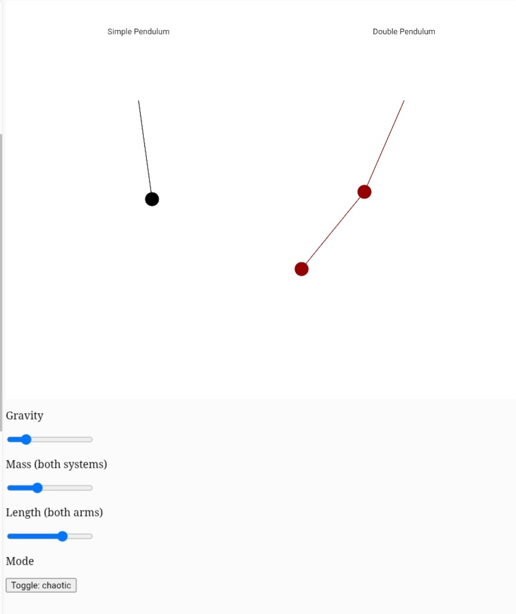

The Resonance Within: From Simple Swings to Chaotic Dances
Introduction: How Inner Oscillations Become Unpredictable
There’s something mesmerizing about a pendulum. It swings back and forth, silent and smooth, like a heartbeat in mechanical form. For centuries, pendulums have measured time, modeled celestial motion, and illustrated the laws of classical mechanics.
But hidden beneath their simplicity lies a deeper truth: a pendulum can transform from a symbol of order into a source of chaos. A small increase in energy or a slight change in starting position can send it spiraling into wildly different behaviors.
This article explores that transition—from predictable oscillation to unpredictable chaos—by studying pendulums in both theory and simulation. Through Python models and dynamic visualizations, we’ll trace the evolution from simple harmonic motion to nonlinear dynamics, and finally to chaotic systems.
The Simple Pendulum
Deriving the Linear Model
Imagine a pendulum—a mass hanging from a string—free to swing under gravity. Its angular displacement from vertical is θ, its length is L, and mass is m.
Using Newton’s laws or Lagrangian mechanics, the full equation is:
\[ \frac{d^2\theta}{dt^2} + \frac{g}{L} \sin\theta = 0 \]
For small angles (under ~15°), we can approximate sin θ ≈ θ, giving:
\[ \frac{d^2\theta}{dt^2} + \frac{g}{L} \theta = 0 \]
This has the solution:
\[ \theta(t) = \theta_0 \cos\left(\sqrt{\frac{g}{L}}\,t\right) \]
...and a period:
\[ T = 2\pi \sqrt{\frac{L}{g}} \]
The Nonlinear Pendulum
Beyond small angles, we return to the full equation:
\[ \frac{d^2\theta}{dt^2} + \frac{g}{L} \sin\theta = 0 \]
Energy and Phase Diagrams
The total mechanical energy is:
\[ E = \tfrac{1}{2} m L^2 \omega^2 + mgL(1 - \cos\theta) \]
We visualize this using phase portraits (θ vs ω) and energy curves. At low energy, the motion is bounded and oscillatory; at higher energies, the pendulum rotates fully.
Numerical Simulation with Python
We solve the nonlinear equation with Runge-Kutta via SciPy:
from scipy.integrate import odeint
def deriv(y, t, g=9.81, L=1.0):
theta, omega = y
return [omega, -(g/L) * np.sin(theta)]Try it yourself:
👉 Open the Nonlinear Pendulum Simulator in Colab
The Double Pendulum: Gateway to Chaos
Attaching a second pendulum arm leads to a system governed by two coupled nonlinear equations. Even tiny changes in starting conditions result in radically different motion paths.
Visualizing Chaos
Lyapunov Exponents
Chaos means deterministic unpredictability. A positive Lyapunov exponent indicates that two close starting points will diverge exponentially.
Javascript Chaos Simulator in editor.p5js
This interactive tool lets you adjust mass, length, and angles, and see real-time animations:
The Importance of Chaos in Real Life
Chaos isn’t theoretical—it helps us model and design in many fields:
- Weather Forecasting: Small measurement errors can drastically change forecasts; models use probability.
- Electrical Circuits: Nonlinear components can oscillate or behave chaotically; engineers design to prevent instability.
- Space Missions: NASA exploits chaotic orbits (like Lagrange points) to save fuel.
- Biological Rhythms: The heart and brain show chaotic patterns used in medical diagnostics.
- Economics & Ecology: Small changes can ripple unpredictably; chaos helps model feedback loops.
Embracing chaos lets us design systems that adapt and respond even in unpredictable environments.
Real-Life Chaos and Resonance
- Clock mechanisms
- Bridge resonance (e.g., Tacoma Narrows)
- Atmospheric turbulence
FAQs
Conclusion: What the Pendulum Taught Me
The humble pendulum—once a symbol of time’s regularity—became my window into unpredictability. As I simulated swings that spiraled into chaos, I saw echoes of life in motion: how tiny changes in energy, angle, or timing can lead to vastly different outcomes.
I began this project as a coder and physics student. I ended it as something more: a systems thinker. Someone who respects both the elegance of equations and the limits of prediction. The resonance I discovered was not just in the math—it was within me. In the way I respond to uncertainty. In the curiosity that keeps me iterating, even when simulations fail. In the understanding that engineering isn't only about solving—it’s about listening to how systems behave, even when they disobey our expectations.
Developing the simulation wasn’t always smooth. I struggled with numerical instabilities, especially when solving the double pendulum’s equations. The system would explode with errors unless I carefully tuned the timestep. There were nights when graphs wouldn’t plot, and I had to learn to debug with patience—checking every angle, every velocity. I realized that coding is not just typing; it’s thinking in slow motion. This experience taught me resilience, creativity, and the value of small adjustments—exactly like in chaotic systems themselves.
These lessons connect deeply with my broader aspirations in mechanical engineering. My dream is to design systems that are not just efficient, but adaptive—engines that self-regulate, circuits that respond to noise, devices that can function in unstable or unpredictable conditions. At the university level, I’m eager to delve into control systems, vibrations, and thermodynamics, and to collaborate on hands‑on engineering projects that marry code with hardware. Understanding chaos and resonance has shown me that the most elegant solutions often arise from messy realities.